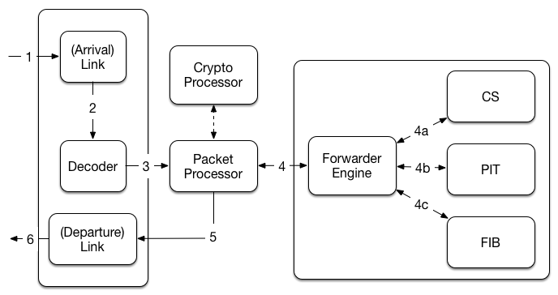

Overview
iris is a CCNx 1.0 forwarder with the following features:
- CCNx 1.0 specification compatability (i.e., correct Interest, Content Object, and Interest Return forwarding).
- UDP and TCP links (layer 2 Ethernet is not supported).
The following features are currently in progress:
- FLIC manifest support with pre-fetching capabilities.
- Optional response signature verification.
iris is not meant to be a high performance forwarder. It was built for two reasons: (a) to learn Rust and (b) to aid academic research projects at UC Irvine. To that end, I will try to keep it up to date so long as my research activity requires it. Going forward, I cannot make any promises about interoperability with other existing forwarders, e.g., the PARC CCNx Athena forwarder.
irisctl
iris is controlled with a program called irisctl (iris control). This is used to perform tasks such as creating passive link listeners, active link connections, and managing FIB routes. Please consult the program executable for comprehensive usage information (i.e., run `irisctl --help`).
Packet Flow
iris uses the Rust mio asynchronous I/O library to read and write data from and to the network. Each packet invokes the processing pipeline shown in the figure below.
Contributing
As previously mentioned, iris was developed to aid my personal research. I will update it as needed. However, I would openly welcome any contributions to improve the design, implementation, or documentation. I'm not picky about the format of contributions (i.e., email patches would work fine), but Github pull requests would probably be easiest for everyone involved.